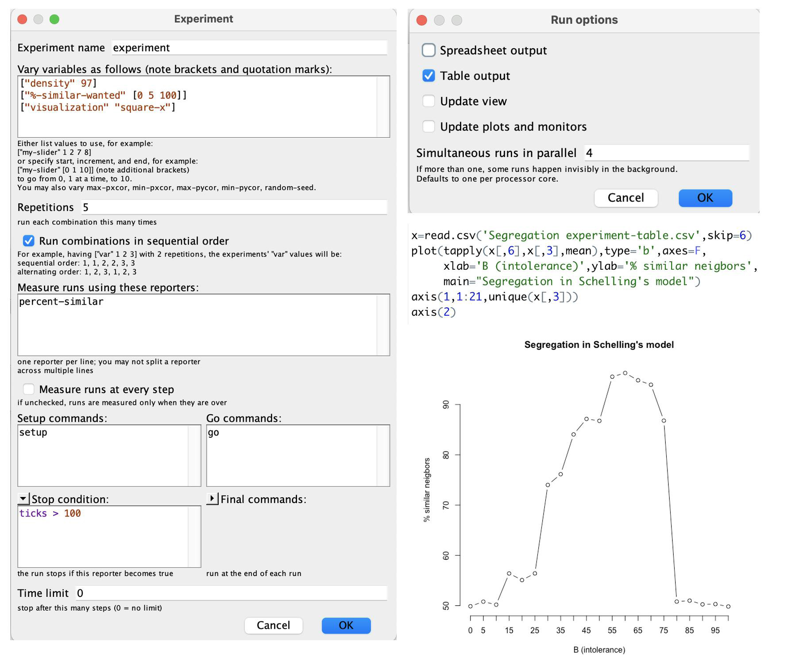
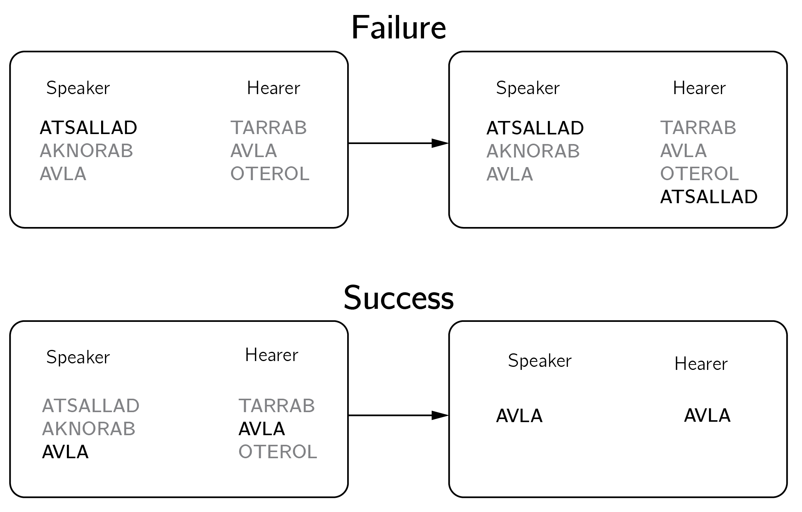
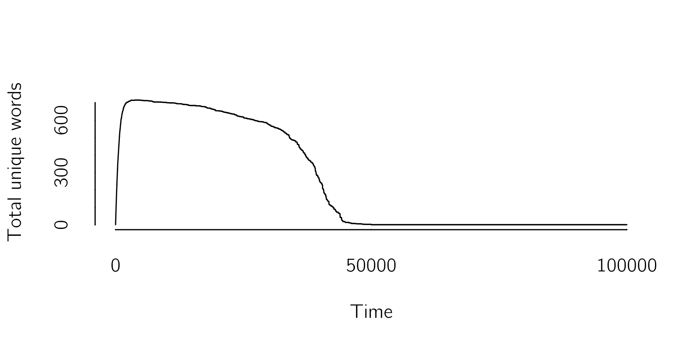
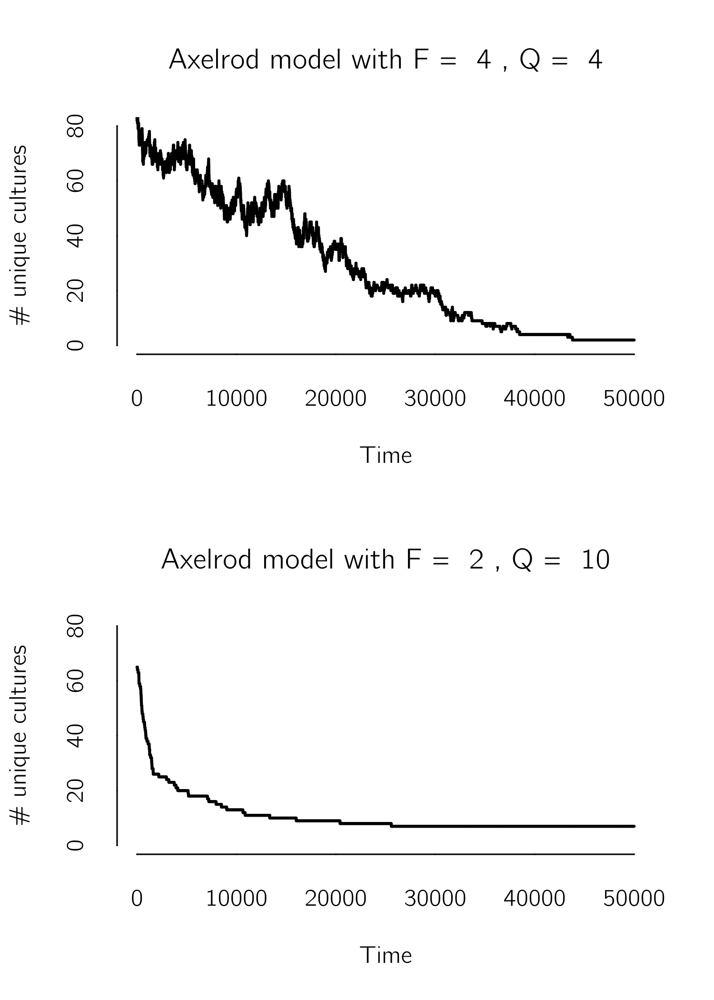
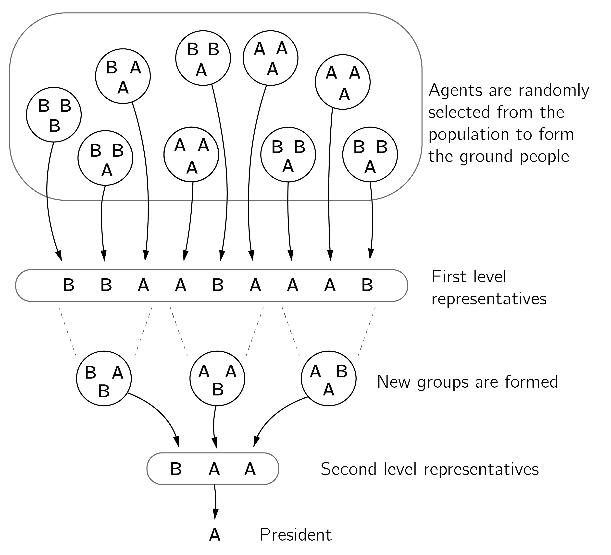
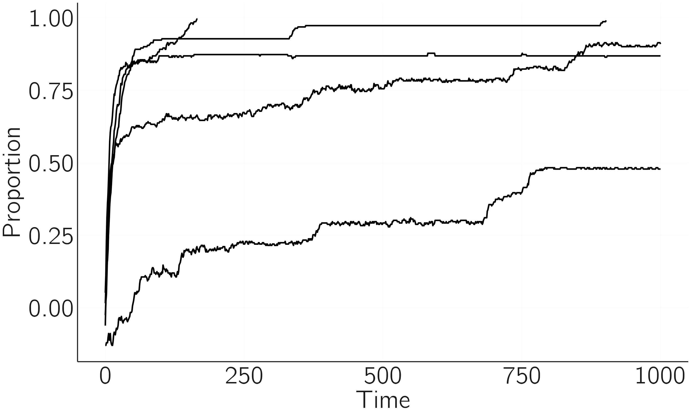
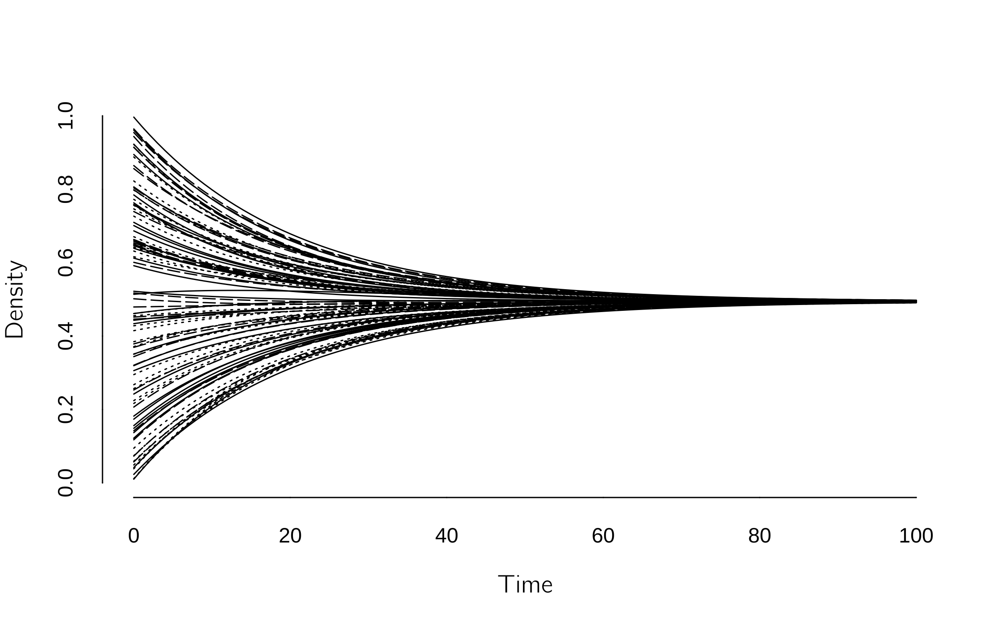
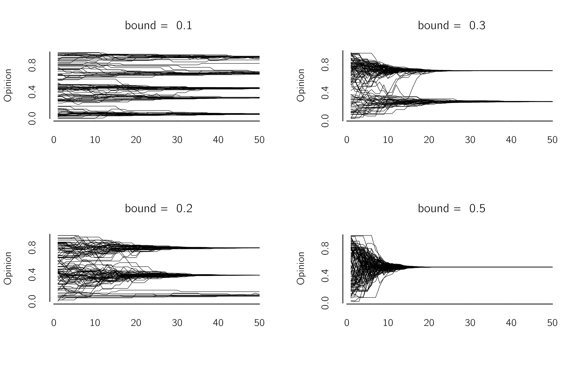
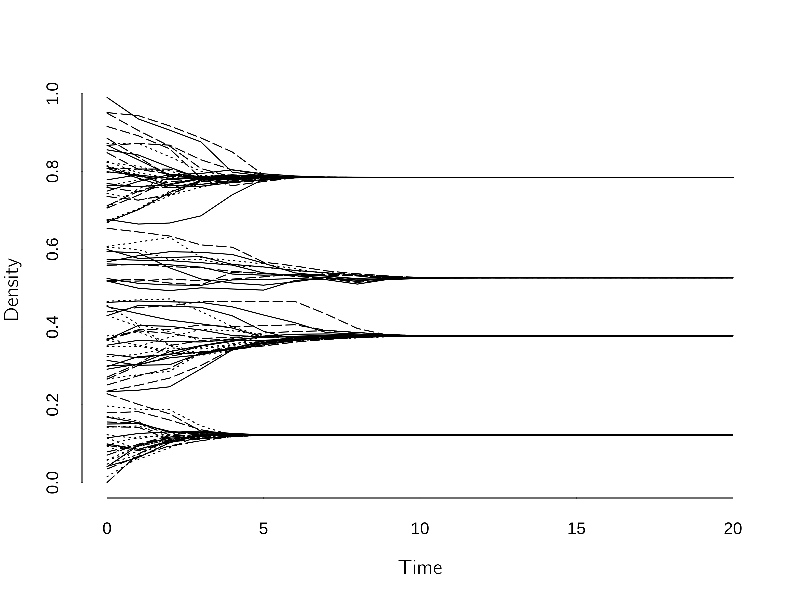

resample <- function(x, ...) x[sample.int(length(x), ...)]
n <- 1000; iter <- 100000
x <- vector("list", n)
n_possible_words <- 1000000 # should be very high
total_words <- total_unique_words <- numeric(iter)
for(i in 1:iter){
j <- sample(1:n, 1) # speaker
k <- sample((1:n)[-i], 1) # hearer
# if speaker has no words, make one up (actually just number)
if(length(x[[j]]) == 0) x[[j]][1] <- sample(1:n_possible_words, 1) else
{
spoken_word <- resample(x[[j]], 1) # choose a word (actually just number)
if(any(x[[k]]%in%spoken_word)) # hearer knows the word
{
x[[j]] <- spoken_word # erase list except spoken_word
x[[k]] <- spoken_word # erase list except spoken_word
} else # hearer does not know the word
x[[k]] <- c(x[[k]], spoken_word) # add word to list
}
total_words[i] <- length(unlist(x))
total_unique_words[i] <- length(unique(unlist(x)))
}
layout(1:2)
plot(total_words, type = 'l', xlab = 'time', bty = 'n')
plot(total_unique_words, type = 'l', xlab = 'time', bty = 'n')
unique(unlist(x)) # winning word7 社会物理学
7.1 はじめに
この最終章は人々の間のダイナミクスに充てられる。社会的相互作用のネットワークは疑いなく複雑系の基準を満たし、しばしば予測不可能性、突然の変化、そして自己組織化を示す。人々の間のダイナミクスのモデルは、社会学者のような社会科学者の領域だが、統計物理学の背景をもつ科学者の領域でもある。ここでも単純化が必要であり、この場合の犠牲者は心理学である。 これらのモデルのエージェントにもう少し心理学を加え、これらのモデルを研究するには複雑すぎるものにすることなく、より多くの現象を説明できるようにすることは、一つの課題である。その一線を越えるのは非常に容易である。本章の第二の部分は、私が心理社会モデルと呼ぶものを扱う。
ほとんどの社会物理学モデルでは、人々は二値のノード、すなわちオンかオフ、賛成か反対、あるいは一つの連続的な属性のみをもつシステムに還元される。
私は、いくぶん論争的な社会物理学（sociophysics）という用語を、多くの異なる科学に根をもつこの非常に多様な研究分野の呼び名として用いる。それは、心理学で一般に受け入れられている精神物理学（psychophysics）という用語と同じくらい（不）正確である。私がそれを気に入っているのは、それが、社会過程の形式化され数学的に述べられた理論に至るという意図を強調するからである。それはしばしば物理学で最初に開発された形式論に基づく。代替的な呼び名は社会物理学（social physics）、計算社会科学、そしてエージェントベースモデリングである (Goldstone and Janssen 2005)。
私の社会物理学の広い定義では、それは多くの異なるシステムと過程を扱う。すでに論じた例は、二者システムにおける脚の振りや、建物の火災から逃げる群衆における、運動の同期である。ダンスする群衆に加わることのグラノヴェッターの閾値モデルはもう一つの例である。多くの論文は意見、流行、噂などの広がりを扱う。これが本章の主たる話題となる。しかしこの分野はまた、分離、協力、犯罪、経済システムなどに関する仕事も含む。私はいくつかの鍵となる例を提示し、それから意見の社会的ダイナミクスのモデルに移る。
読むべき重要なフォローアップの本には、社会的振る舞いのモデリングに関する Smaldino (2023)、協力と利他行動に関する Bowles and Gintis (2011)、社会経済のモデリングに関する Durlauf and Young (2001)、人工社会の構築に関する Epstein and Axtell (1996)、Epstein (2006)、Epstein (2014)、そして社会生活の計算モデルに関する Miller and Page (2007) がある。この研究領域に関する優れたレビュー論文もいくつかある (Castellano, Fortunato, and Loreto 2009; Noorazar 2020; Proskurnikov and Tempo 2017; Jusup et al. 2022)。あまり数学に焦点を当てないレビューが Flache et al. (2017) によって提供されている。
7.2 いくつかの有名な例
7.2.1 分離
分離を研究する最も有名な計算モデルはシェリングのモデルである (Schelling 1971)。このモデルの単純化された版は、二次元空間、すなわち NetLogo におけるようなセルオートマトンを仮定し、そこでは各位置すなわちセルが二つのタイプのエージェントの一方に占められているか、空である。密度パラメータが、いくつの位置が占められているかを決める。エージェントは、その八つの近傍のある割合 \(B\) が自分と同じタイプであれば、その位置にとどまる。したがって、\(B = 0\%\) なら、誰も動かない。B が 100% に近い値については、誰もが常に動く。シェリングが彼のモデルで示したのは、30% 近くという低い不寛容の水準でさえ分離をもたらす、ということであった。
人々が最大 70% の「よそ者」の近傍を受け入れられるとしても、分離は依然として生じる。
NetLogo モデル Segregation（社会科学のサンプルモデル）はこのモデルを実演する。とりわけ高密度では、分離していない状態、分離した状態、そしてエージェントが動き続ける混合状態の間の転移が見られる (Gauvin, Vannimenus, and Nadal 2009)。スライダーで遊ぶ代わりに、BehavioralSpace オプションを用いることもできる。Figure fig-ch7-img1-old-89 は、このオプションの設定、R コード、そして結果を示している。可視化なしには NetLogo はかなり速いことに注意しよう。
第5章 sec-Motor-action で、ハーケンの仕事の文脈で見た一つの概念は秩序パラメータの概念であった。秩序パラメータは文字どおりシステムにおける秩序を測る。 私たちは、突然の変化やヒステリシスといった、モデルにおける質的な現象を捉える秩序パラメータを探す。NetLogo のシミュレーションでは、私は似た近傍の割合を用いた。Gauvin, Vannimenus, and Nadal (2009) は、おそらくより良い二つの秩序パラメータを提案している。すなわち、クラスターの同定を必要とする分離係数と、システムの三つの状態をよりよく区別する望まれない位置の密度である。
適切な秩序パラメータを見つけることは常に容易ではなく、しばしば複数の定義が可能である。

明らかに、これは多くの仕方で拡張できる初期のモデルにすぎず、そのいくつかはシェリングの元の論文ですでに探求されている。この研究の系譜の興味深い歴史的なスケッチについては、Hegselmann (2017) を参照。シェリングの研究に着想を得たもう一つの NetLogo モデルは Party と呼ばれる。このモデルでは、パーティ参加者は、現在のグループが異性の個人を不釣り合いな数だけ含む場合、不快を経験してグループを変える。都市のダイナミクスに焦点を当てた最近のレビューが Jusup et al. (2022) に見出される。
7.2.2 言語の進化——ネーミングゲーム
言語は、自己組織化する文化的過程で創発する複雑系である (Steels 1995)。スティールズは言語の進化を研究するためにネーミングゲーム（figure fig-ch7-img2-old-90）を開発した。レビューについては Chen and Lou (2019) を参照されたい。Castellano, Fortunato, and Loreto (2009) は簡単なレビューを提供している。

ゲームはすべてのエージェントについて空白のリストで始まる。第一のラウンドで、話し手は、可能性が無限であると仮定して、新たな一意の単語を発明する。私たちは、名付けるべき対象が一つだけであり、社会ネットワークが完全に結合していると仮定する。集団から二つのエージェントがランダムに選ばれる。一方は「話し手」、他方は「聞き手」である。話し手は対象について自分の語彙から単語を選ぶ。聞き手がその単語になじみがなければ、彼女はそれを自分の語彙に取り入れる。彼女がその単語を認識すれば、両方が語彙を消去し、話された単語だけを保持する。
この過程をシミュレートする R コードは次のとおりである。
これは figure fig-ch7-img3-old-91 をもたらす。

エージェントが多くの異なる単語を用いる相の後、たった一つの単語から成る言語が突然創発する。単純化は、エージェントが単語 A、単語 B、あるいは単語 A と B の両方のいずれかで始まる場合であろう。したがって新たな単語は発明されない。この場合、時間発展を三つの微分方程式で書ける。
\[ \begin{gathered} {\frac{{dX}_{A}}{dt} = {- X}_{B}X_{A} + {\frac{1}{2}}X_{AB}X_{AB} + X_{A}X_{AB}}, \\ {\frac{{dX}_{B}}{dt} = {- X}_{A}X_{B} + {\frac{1}{2}}X_{AB}X_{AB} + X_{B}X_{AB}}, \\ \frac{{dX}_{AB}}{dt} = {2X}_{A}X_{B} - X_{AB}X_{AB} - (X_{A}+ X_{B})X_{AB}. \end{gathered} \tag{7.1}\]
第一の方程式は次のように理解できる。聞き手 A に話す話し手 B は、聞き手 A を AB エージェントに変える。A エージェントの喪失は \({- X}_{B}X_{A}\) である。AB エージェントに話す AB エージェントは、話し手の A か B のランダムな選択に応じて、A か B エージェントになる（\({X}_{AB}X_{AB}/2\)）。話し手 A が AB エージェントに話せば、後者は A エージェントになる（\(X_{A}X_{AB}\)）。これら三つの項が一緒になって \(X_{A}\) の変化を定義する。他の方程式も同じ論理に従う。これを Grind に実装するのは容易である。三つの可能な結果がある。すなわち、(1) A の初期割合が B より大きければ A が勝つ。(2) B の初期割合が A より大きければ B が勝つ。そして (3) これらの割合がちょうど等しければ、三つの選択肢 A、B、AB がすべて共存するが、この平衡は不安定である。
極めて単純化されているものの、ネーミングゲームは、完全に結合したネットワークでは言語の共存が難しいことを例示する。
7.2.3 文化のダイナミクス——アクセルロッドモデル
ロバート・Axelrod (1997) は、社会的相互作用とホモフィリーの効果に基づく、影響力のある文化拡散のモデルを導入した。 アクセルロッドのモデルでは、個人は相互作用を通じてより似たものになる——ただし、すでにいくつかの文化的特徴を共有している場合に限る。
ホモフィリーとは、個人が自分と似た他者と交わったり結び付いたりする傾向ないし選好を指す。
このモデルでは、エージェントは \(F\) 個の文化的特徴（たとえば信念、習慣）をもち、その各々が \(Q\) 個の可能な名義値をもつ。エージェントは、たとえば完全に結合したものといった、何らかのネットワークに組織される。各時間ステップで、二つのエージェントがランダムに選ばれる。共有される特徴、すなわち同じ値をもつ特徴の数を数える。この数を \(F\) で割ったものが、二つのエージェントの一方の不一致な特徴の一つが他方のそれに等しく設定される確率を与える。したがって、すべての特徴で異なれば、何も起こらない。特徴の 50% が同じ値をもてば、不一致な特徴の一つが一方のエージェントについて確率 0.5 で変わる。
相互作用とホモフィリーの組み合わせは、しばしば単一の文化への大域的な収束をもたらす自己強化的なダイナミクスを作り出す。しかし、\(F\) と \(Q\) のある種の選択については、モデルは多様性の状態に収束する。以下のシミュレーションでは、単純な秩序パラメータとして残る文化の数を用いる。Castellano, Marsili, and Vespignani (2000) は、より高度な秩序パラメータを用いて、このモデルにおける相転移の詳しい分析を提示している。想像がつくように、このモデルは多くの仕方で拡張できる。たとえば名義的な状態の代わりに順序的な状態を導入することによってである (Macy, Flache, and Takacs 2006)。
このモデルの以下の R コードは figure fig-ch7-img4-old-92 の第一のプロットを生成する。値で遊んで異なる場合を見られる。
resample <- function(x, ...) x[sample.int(length(x), ...)]
n <- 100; iter <- 50000
F <- 4 # features
Q <- 4 # nominal levels per feature
uniques <- numeric(iter)
x <- matrix(sample(1:Q, replace = TRUE, n * F), n, F)
for(i in 1:iter){
j <- sample(1:n, 1) # agent 1
k <- sample((1:n)[-j], 1) # agent 2
w <- sum(x[j,] == x[k,])/F # agreement
if(w < 1 & runif(1) < w) {
# which (unequal) feature to update:
f <- resample(which(x[j,] != x[k,]), 1)
x[j,f] <- x[k,f] # update
}
uniques[i] <- nrow(unique(x))
}
plot(uniques[1:i], type = 'l', lwd = 2, xlab = 'time',
ylab = '# unique cultures', bty = 'n', ylim = c(0, 80),
main = paste0('Axelrod model with F = ', F, ', Q = ', Q))
アクセルロッドモデルについて私が魅力的だと思うのは、その多次元性である。 多くの人は、オランダよりも米国における分極化をより懸念している。米国では、生活のすべての側面が相互接続されているように思われ、ジーンズの選択や好きなスポーツといった一見無関係な要因すら政治的信念と相関する。これは脱分極化の可能性を大いに制限する。
ある種の次元で他の人々と共通のいくつかの特性ないし性質をもつ限り、社会には希望がある。
7.3 意見のダイナミクス
同じ有名な論文で、アクセルロッドは重要な問いを尋ねた。「人々が相互作用するとき、信念、態度、行動においてより似たものになる傾向があるなら、なぜそのようなすべての違いが最終的に消えないのか」。
アクセルロッドの問いへの答えは、通常、エージェント間の限られた相互作用という観点で提起される。たとえばアクセルロッドのモデルでは、それはエージェント間の選択的な相互作用によるものであった。連続意見モデルでは、それは有界信頼（bounded confidence）によるもの、すなわち違いが大きすぎるエージェントは相互作用を拒む。あるモデルでは、ネットワーク内の下位集団の間に単に結合がない。
有界信頼とは、個人が、他者の意見が自分の意見のある範囲内にあるときにのみ、その意見に影響される、という概念を指す。
意見拡散モデルの数を数えるのは難しいが、すべての変種を数えれば、容易に数百に上りうる。それらはすべていくつかの構成要素を共有する。第一に、社会ネットワークに何らかの位相構造がなければならない。モデル構築者はここで異なる選択をする。しばしば、解析的（平均場）アプローチを許すので完全に結合したネットワークが仮定される。他の人はランダムネットワーク、格子、スモールワールドネットワークなどを用いる。問題は、実際の社会ネットワークがどう機能するかを、それが信じがたいほど複雑であること (Newman and Park 2003) を除いて、私たちが本当には知らない、ということである。第二に、いくつかの相互作用の規則を定義する必要がある。たとえば、二つのエージェントが議論の後に中間に行き着くかもしれないし、一方のエージェントが他方の状態を模倣するかもしれないし、一方のエージェントがその局所的な近傍における多数決を採用するかもしれない。最後に、意見を定義しなければならない。 まずいくつかの離散意見モデルを論じる。
社会的伝染モデルにおける大きな区分は、意見が離散的として定義されるか連続的として定義されるかである。
7.3.1 離散意見モデル
7.3.1.1 投票者モデル
可能な限り最も単純なモデルは投票者モデルであるように思われる。その基本形では、二つの可能な意見（\(-1, 1\)）のみをもち、結合した二つのエージェント A と B が出会い、A は単に B の意見を模倣する。この単純なシステムで何が起こるかは、ネットワークの位相構造、すなわちその次元（\(d = 1\)（線上）、\(d = 2\)（格子）、または \(d > 2\) のいずれか）とその大きさ \(N\) に依存する。二次元より多く無限の大きさでは、投票者システムは収束しないが、他の場合には、すべての意見が一致する状態（すべて \(-1\) かすべて \(1\)）に収束する (Castellano, Fortunato, and Loreto 2009; Redner 2019)。 収束にどれだけ時間がかかるかも解析的に導ける。収束時間は、線上の投票者（\(d = 1\)）については \(N^{2}\) に比例し、\(d = 2\) については \(NlnN\) に、\(d > 2\) については \(N\) に比例する。したがって、収束はエージェントが線状に結合しているとき最も遅い。
\(+1\) の状態に行き着く確率は、\(+1\) の初期確率に等しい。
異質投票者モデルでは、各エージェント A は、ある確率 \(r_{i}\) でエージェント B の意見を模倣する。このようにして、頑固な投票者（低い \(r_{i}\) をもつ）の効果を研究できる。頑固な個人（時に熱狂者と呼ばれる）の小集団が多数意見を打ち負かしうることが判明する。投票者に記憶とノイズを加えるなど、他の多くの変種が分析されてきた (Castellano, Fortunato, and Loreto 2009)。左派、中道、右派という三つの集団を考え、左派と右派が相互作用しない場合を考えることも可能である。この場合、初期割合に応じて、一つの状態で完全な合意に達するか、中道なしの過激派の混合に行き着く (Redner 2019)。最後に、社会ネットワークの位相構造が役割を果たす。
一般に、広い次数分布をもつスケールフリーネットワークでは合意に達しやすい。
もう一つのアプローチが Martins (2008) によって提案されている。連続意見と離散行動（CODA）モデルは、意見ダイナミクスの離散的な側面と連続的な側面を組み合わせる。エージェントは離散的に行動するが、他のエージェントの離散的な行動の観察に基づいて自分の連続的な意見を更新する。
CODA では、二つの選択肢 A と B があり、エージェント \(i\) は、A が最良の選択肢であるという何らかの主観確率 \(p_{i}\) をもち、B については \({1 - p}_{i}\) をもつ。実際の選択は \(sgn\left( p_{i} - .5 \right)\) に従ってなされるので、\(p_{i} > .5\) のとき A が選ばれる。次に、エージェントは他のエージェントを観察する。エージェントは、他のエージェントが合理的な選択をする、すなわち A が最良の選択肢のとき .5 より大きい確率 \(a\) で A を選ぶ、と仮定する。モデルを実行する際には、確率の対数オッズ \(v_{i} = ln({p_{i}}/({1 - p_{i}}))\) を用いると便利である。ベイズの定理を用いて、エージェント j が A を選ぶとき \(v_{i}\) を \(v_{i} + a\) に、選択が B であれば \(v_{i} - a\) に更新できる。Martins (2008) は、これらの決定規則を投票者モデルと統合し、極端な形の分極化、すなわち意見の強く双峰的な分布を示している。
7.3.1.2 さらなる離散意見モデル——多数決型モデル
投票者モデルとアクセルロッドモデルでは、相互作用は二つのエージェントに限られる。複数の近傍が各エージェントに影響するとき、多くの新たな選択肢が生じる。一つの選択肢はイジングモデルである (Galam, Gefen, and Shapir 1982)。エージェントは、その近傍の状態に依存する確率で立場を切り替える。イジングモデルの温度変数は、モデルにおけるランダムさに翻訳される。外部場は今や外部の社会的な場として解釈される。このようにして、意見ダイナミクスにおける相転移とヒステリシスを説明できる。
もう一つの深く分析された選択肢は多数決モデルである (Galam 2008; Redner 2019)。ここでは、投票者のランダムな集団が選ばれ、この集団のすべての投票者が局所的な多数意見を採用する。この過程は、一つの意見への収束に達するまで繰り返せる（有限の集団では常にそうなる）。Galam (2008) はこの過程を階層的な仕方で立てている（figure fig-ch7-img5-old-93 を参照）。あるいは、一人の投票者だけがその近傍における多数決によって影響されうる。これは温度 0 のイジングモデルに対応する。

もう一つの場合は \(q\)-投票者モデルである (Castellano, Muñoz, and Pastor-Satorras 2009; Jędrzejewski and Sznajd-Weron 2019)。ここでは、エージェントは、近傍から選ばれた \(q\) 人の投票者すべてが他方の意見で一致する場合にのみ、自分の意見を変える。\(q = 1\) のとき、これは標準的な投票者モデルに帰着する。\(q\)-投票者モデルは一般に、基本的な投票者モデルと比べてより高い度合いの意見の多様性を許す。\(q\)-投票者モデルは NetLogo に実装されている（ユーザーコミュニティモデルの「qvoter_WS」）。
基本的なシュナイダー（Sznajd）モデルでは、エージェントは線上に置かれ、同じ意見をもつ二つの近傍がこの意見を自分の近傍に広める。それらが一致しなければ、その不一致を近傍に強制する。したがって（\(?,1,1,?\)）は（\(1,1,1,1\)）になり、（\(?,-1,1,?\)）は（\(1,-1,1,-1\)）になる。これは、すべて \(1\) の状態、すべて \(-1\) の状態、あるいは \(1\) と \(-1\) の対の列に収束しうる。後者の状態は確率 \(.5\) で達成される。このモデルも、選挙過程を加えるなど、多くの仕方で拡張されてきた (Sznajd-Weron, Sznajd, and Weron 2021)。
7.3.1.3 社会的インパクト理論
ここで言及する最後の離散モデルは社会的インパクトモデルであり、これはビブ・ラタネの (1981) 社会的インパクトの心理学的理論に基づく。ラタネは複雑系理論から多くの考えと概念を社会心理学に導入した。彼の心理学的理論は社会心理学にしっかりと根ざしており、あらゆる種類の証拠によって支持されている (Karau and Williams 1993)。
この理論では、意見の変化は社会的インパクト \(I\) に依存する。意見 \(X\) は \(-1\) か \(1\) である。社会的インパクトは、反対者（反対の意見をもつ結合したエージェント）の説得力（\(p_{i}\)）、支持者（同じ意見をもつ者）の支持性（\(s_{i}\)）、そしてこれらのエージェントへの距離（\(d_{ij}\)）の関数である。距離の効果は \(\alpha\) で修正できる。\(\alpha\) の値が増加すると、より遠くに位置するエージェントの影響が減じる。これらのパラメータはすべて正のランダム値である。インパクト \(I\) は次のように定義される。
\[I_{i} = I_{i}^{P} - I_{i}^{S} = \left\lbrack \sum_{j = 1}^{N}{\frac{p_{j}}{d_{ij}^{\alpha}}\left( 1 - X_{i}X_{j} \right)} \right\rbrack - \left\lbrack \sum_{j = 1}^{N}{\frac{s_{j}}{d_{ij}^{\alpha}}\left( 1 + X_{i}X_{j} \right)} \right\rbrack. \tag{7.2}\]
\(j\) でエージェント \(i\) の近傍にわたって和を取る。\(X_{i} = X_{j}\) のとき、\(1 - X_{i}X_{j}\) の項のために \(I^{P} = 0\) であり、\(X_{i} \neq X_{j}\) のときの \(I^{S}\) についても同じことが当てはまることに注意しよう。説得力と支持性の効果は、エージェント間の距離が増すにつれて減じる。\(\alpha\) を 1 より大きい値に設定すると、遠い近傍の効果が減じる。これらの力に加えて、この理論は、イジングモデルにおけるような外部場 \(H\) を仮定する。意見のダイナミクスは次のとおりである。
\[X_{i}(t + 1) = - sgn\lbrack X(t)I_{i}(t) + H\rbrack. \tag{7.3}\]
したがって、\(X(t)I_{i}(t) + H\) が正であればエージェントの意見は \(-1\) になり、その逆も然りである。Lewenstein, Nowak, and Latané (1992) は、完全に結合したネットワークについての解析的な平均場解を提示している。個々の場がなければ、モデルは無限の数の定常な意見状態に行き着き、そのうちの一つが通常支配的である。
個々の場が存在する場合、いくつかの少数意見が準安定になりうる。 これらのより小さな少数派クラスターも、再び縮む前に長い間持続しうるし、その過程が繰り返されて、いわゆる階段状の振る舞いをもたらす（figure fig-ch7-img6-old-94）。そのようなモデルは、なぜ小さな少数派集団（地球平面説の信念など）が、あらゆる予想に反して、しばしば長い間持続するのかを説明できる (Douglas, Sutton, and Cichocka 2017)。
準安定な意見はしばらくの間持続しうるが、最終的に、ノイズや他の要因のために、突然より小さなクラスターに縮む。

このモデルの拡張には、学習、指導、外部の影響、そしてアイデンティティの効果が含まれる (レビューについては Holyst, Kacperski, and Schweitzer 2001 を参照)。
7.3.2 連続意見モデル
7.3.2.1 古典的モデル
独自の歴史をもつもう一つの研究の系譜は、意見が連続変数であるという仮定から出発する (レビューについては Noorazar 2020 を参照)。それらはたとえば 0 と 1 の間の値をもつ。古典的なモデルはドグルート（DeGroot）モデルであり、そこではエージェントが重み付きネットワークに結合される。各反復で、あるエージェントの意見はネットワーク内のすべての結合したエージェントの重み付き平均に等しく設定される。このようにして、意見は収束する傾向がある（figure fig-ch7-img7-old-95）。フリードキン–ジョンソン（Friedkin—Johnson）モデル (Friedkin and Johnsen 1990) は、各エージェントの確信の水準を含む拡張である。このエージェントの自分自身の意見への確信は、他者の効果を減じる。これらの線形モデルにおけるクラスタリングないし分極化は、ネットワークの一部が結合していない場合にのみ生じうる。フリードキン–ジョンソンモデルは Grind で（method='euler' オプションを用いて）次のように効率的にシミュレートできる。
FJ <- function(t, state, parms){
with(as.list(c(state, parms)),{
X <- state[1:n]
M <- M / apply(M, 1, sum) # weights sum to 1
dX <- (1 - g) * M %*% X + g * X - X
return(list(dX))
})
}
n <- 100
M <- matrix(runif(n^2, 0, 1), n, n)
g <- .95 # if g = 0 => DeGroot model
x0 <- runif(n, 0, 1)
s <- x0; p <- c()
run(odes = FJ, method = 'euler', tmax = 100)
追加のバイアスのメカニズム——そこでは確証する証拠が反証する証拠に対してより重く重み付けされる——を伴えば、結合したネットワークでも分極化が生じうる (Dandekar, Goel, and Lee 2013)。
7.3.2.2 有界信頼
有界信頼のメカニズムは、連続意見モデルで意見のダイバージェンスを生み出す最も効果的な方法として広く研究されてきた。それは、個人が自分のものと異なる意見を受け入れ考慮する意欲に限りがあり、類似のある範囲すなわち「境界」内にある場合にのみ自分の意見を更新する、と仮定する。
単純だが非常に興味深いモデルはデファント（Deffuant）モデルである (Deffuant et al. 2000)。n 人のエージェントの初期の意見は 0 と 1 の間の値にランダムに設定される。各ステップで、二つのエージェント \(i\) と \(j\) が出会う。\(\left\lceil X_{i}(t) - X_{j}(t) \right\rceil > \epsilon\) であれば、意見の差が境界 \(\epsilon\) を超えるので何も起こらない。そうでなければ、彼らは次に従って意見を交換する。
\[ \begin{gathered} X_{i}(t + 1) = X_{i}(t) + \mu(X_{j}(t) - X_{i}(t)),\\ X_{j}(t + 1) = X_{j}(t) + \mu\left( X_{i}(t) - X_{j}(t) \right). \end{gathered} \tag{7.4}\]
したがって、\(\mu = .5\) であれば、彼らは中間で互いを見出す。\(\mu = 1\) であれば、投票者モデルにおけるように互いの立場を取る。\(\mu\) の値は大した違いを生まないが、モデルは \(\mu = .5\) で最も速く収束する。しかし、境界 \(\epsilon\) の選択は大きな違いを生む。\(\epsilon = 0\) については、すべてのエージェントが自分の立場に固執する。\(\epsilon > .5\) については、彼らはすべて \(X = .5\) に収束する。中間の値については、異なる形のクラスタリングが生じる（figure fig-ch7-img8-old-96）。ネットワークの位相構造は大した違いを生まないことが示されている (Fortunato 2004)。このモデルの欠点は、収束が遅いことである。このモデルをシミュレートする、速いが完全には正確でないコードは次のとおりである。1
set.seed(20)
layout(matrix(1:4, 2, 2))
iter <- 50; mu <- .5; n <- 200
for (bound in c(.1, .2, .3, .5)){
x <- runif(n, 0, 1)
dat <- matrix(0, iter, n)
for (i in 1:iter){
y <- sample(x, n, replace = TRUE) # find an partner for every agent
x <- ifelse(abs(x - y) < bound, x + mu * (y - x), x)
dat[i, ] <- x
}
matplot(dat, type = 'l', col = 1, lty = 1, bty = 'n', xlab = '',
ylab = 'opinion', main = paste('bound = ',bound))
}
このコードで多くのシナリオと変種を探求できる。一つの興味深い選択肢は、異なる境界をもつエージェントをもつことである (Weisbuch et al. 2002)。 また、各時間ステップで \(X\) にいくらかのノイズを加えると分極化が減じる (Zhang and Zhao 2018)。相互作用の数とともに境界を下げることもできる。これは分極化を増大させる (Weisbuch et al. 2002)。私が興味深いと思う一つの場合は、低い境界について分極化が現れた後に境界を増大させることである。これはヒステリシスを与える。.5 の境界は分極化を減じるのに時に不十分である。Castellano, Fortunato, and Loreto (2009) は、いくつかの他の拡張（たとえばプロパガンダの役割）をレビューしている。
いくらかの開かれた心をもつエージェントを加えることが分極化を防ぐのに役立つことが判明する。
もう一つのよく知られたモデルはヘーゲルマン–クラウゼ（Hegselmann—Krause）モデルである (Rainer and Krause 2002)。このモデルはデファントモデルと非常に似ているが、一人の他のエージェントとやり取りする代わりに、すべての結合したエージェントとやり取りする。ただし、これらのエージェントとの意見の差が十分に小さい場合に限る。したがって、エージェントは、意見の差が境界より小さいすべての結合したエージェントの意見を平均する。このモデルはドグルートモデルの拡張であり、フリードキン–ジョンソンのコードに二行を加えることでシミュレートできる。
accepted <- abs(outer(X, X, '-')) < bound # acceptable neighbors
M <- accepted * Mこれを X <- state[1:n] の行の後に加え、bound = .1 を加える（figure fig-ch7-img9-old-97）。

再び、多くの拡張が研究されてきた。最近の論文は、ネットワークの位相構造が意見における認知的不協和の関数である場合を研究している (Li et al. 2020)。Baumann et al. (2020) はエコーチェンバーの連続意見モデルを提示している。特に関心の対象は多次元の場合である (Lorenz 2007)。エージェントが一つの次元に沿った最小距離に基づいて相互作用を受け入れるとき、合意により容易に達しうる。有界信頼という考えは、社会的判断理論 (Sherif and Hovland 1961) で提案された受容の幅（latitude of acceptance）という概念と結び付けられてきた。この理論はまた拒絶の幅を提案する。二つの境界、すなわち下界と上界がある。下界の下では、エージェントはその違いを減じる。境界の間では、彼らは互いを無視する。そして上界より多く異なれば、彼らはその違いを増大させる。このシナリオは Jager and Amblard (2005) で調べられている。
NetLogo のオンラインライブラリに、標準的なデファントモデルとヘーゲルマン–クラウゼモデルの両方をシミュレートするモデル「BC」が見つかる。
7.3.3 経験的な検証
Castellano, Fortunato, and Loreto (2009) は、経験的証拠と理論的モデルの間の、後者に有利な際立った不均衡に注意している。意見のダイナミクスについて経験的データがないわけではない。データは、投票行動、多国パネル調査、ソーシャルメディア、そして実験室の研究からのものである (レビューについては Peralta, Kertész, and Iñiguez 2022 を参照)。問題は、これらのデータがモデルを区別しない、ということにあるように思われる。データのほとんどはすべての意見モデルに当てはまり、一般的なモデリングのアプローチは支持するが、特定のモデルは支持しない。これは、現在の意見モデルが特異性を欠き柔軟すぎるために反証しにくい、という点に関係する。Flache et al. (2017) は、この分野が競合するモデルの体系的な比較の欠如に悩まされている、と論じている。Borsboom et al. (2021) が概説した理論構築のアプローチがここで役立つかもしれない。私たちには、すべてのモデルが説明すると想定される、一般に合意された現象のリストが必要である。
しかし、もう一つの視点も考慮に値する。物理学では、モデルは精確な量的予測を行う能力によって区別できる。対照的に、他の分野ではしばしば、同じ現象をおおむね説明する複数のモデルがあり、これは有利でありうる。たとえば、シェリングの分離モデルとそのさまざまな反復は、個人が異なる集団に対して寛容であっても分離が生じることを一貫して予測し、頑健な予測を実演する。同様に、交通渋滞の異なるモデルは同じ鍵となる現象を予測する傾向がある。加えて、意見モデルは、用いられる特定のモデルにかかわらず、熱狂者が分極化を増大させることを一貫して示す。異なるモデル間のこの収束が、これらの領域で達成できる最も信頼できる形の予測かもしれない。
7.5 精神社会物理学
複雑な心理過程をモデル化しようとする際に社会的世界を無視すると、不正確な結果をもたらしうる (Sobkowicz 2020)。モデリングに従事する心理学者が、著名な社会物理学のモデリング技法になじむことは決定的に重要である。本章の目的は、これらのモデルの包括的な概観を提供することであったが、このレビューが網羅的でないことに注意することが重要である。新たなモデルが創発し続けるにつれて、ここで提供した基礎的な知識が、願わくは、読者が情報を得続け、その心理学的探求への適用可能性を評価することを可能にするだろう。
同様に、社会的世界をモデル化する際に心理学的要因を除外することは逆効果でありうる。両方の側面を統合する心理社会モデル、さらには精神社会物理モデルの必要性を強調することが不可欠である。社会的インパクトモデルはそのようなアプローチの一例である。私たち自身のモデル、HIOM は本章で詳しく述べた。HIOM は精神社会物理学モデルの方向への重要な一歩である。カスケード転移という概念は、他の適用可能な事例にも明らかに関係し、この分野にはさらなる探求の十分な機会がある。
7.6 演習問題
シェリングのシミュレーション（figure fig-ch7-img1-old-89）を、密度 97 の代わりに 50 で再実行せよ。結果は実質的に異なるか。プロットを提出せよ。(*)
単純なネーミングゲームの方程式（equation eq-ch7-1-old-50）を Grind に実装せよ。三つの選択肢 A、B、AB がすべて共存する場合が不安定な固定点であることを示せ。(**)
\(F = 10\) かつ \(Q = 1\) のとき、アクセルロッドモデル（sec-Cultural-dynamics-The-Axelrod-model）で何が起こるか。なぜか。(*)
1次元投票者モデル（sec-Voter-models）を R または NetLogo（データ分析には BehaviorSpace と R を用いる）に実装せよ。ある状態への収束の確率がその初期割合に等しいことを確認せよ。それから、この時間の平方根を \(N\) に対してプロットすることで、収束時間が \(N\) の二次関数であることを確認せよ。少なくとも 20 回の実行についてこれらの時間の平均を取れ。(**)
社会的インパクトモデル（sec-Social-Impact-theory）で、階段状の振る舞いは max-h パラメータに依存するか。(*)
デファントモデル（sec-Bounded-confidence）では、.5 の境界はほとんど常に意見の収束をもたらす。境界が 1,000 回の反復にわたって 0 から .5 まで成長するように、デファントモデルの R コードを調整せよ。一つか二つのクラスターに行き着く。反復の数を増やしても、なぜ二つのクラスターに行き着くのか。(**)
HIOM の NetLogo モデル（sec-The-HIOM-model）を実行せよ。
mean-init-informationを .5、mean-init-attentionを 1、boundを .2、%active-agentsを 90 に設定せよ。実行させ、add-activistsとpertubate activistsを用いよ。なぜこれは変化をもたらさないのか。(*)メディアの効果を HIOM に加える単純な方法を考えよ。実装し、結果を提示せよ。(**)
優先的選択ネットワークに HIOM を実装せよ。「Preferential Attachment NetLogo」モデルを用いよ。(**)
「肉を食べる菜食主義者」の予測（sec-A-counterintuitive-prediction）を検証する経験的研究を計画せよ。
Axelrod, Robert. 1997. “The Dissemination of Culture: A Model with Local Convergence and Global Polarization.” Journal of Conflict Resolution 41 (2): 203–26. https://doi.org/10.1177/0022002797041002001.
Barbaro, Alethea B. T., Lincoln Chayes, and Maria R. D’Orsogna. 2013. “Territorial Developments Based on Graffiti: A Statistical Mechanics Approach.” Physica A: Statistical Mechanics and Its Applications 392 (1): 252–70. https://doi.org/10.1016/j.physa.2012.08.001.
Baumann, Fabian, Philipp Lorenz-Spreen, Igor M. Sokolov, and Michele Starnini. 2020. “Modeling Echo Chambers and Polarization Dynamics in Social Networks.” Physical Review Letters 124 (4). https://doi.org/10.1103/PhysRevLett.124.048301.
Boccaletti, S., G. Bianconi, R. Criado, C. I. del Genio, J. Gómez-Gardeñes, M. Romance, I. Sendiña-Nadal, Z. Wang, and M. Zanin. 2014. “The Structure and Dynamics of Multilayer Networks.” Physics Reports, The structure and dynamics of multilayer networks, 544 (1): 1–122. https://doi.org/10.1016/j.physrep.2014.07.001.
Boot, Jesse, Maarten van der Ende, Reinout W. Wiers, Mike Lees, and Han L. J. Van der Maas. submitted for publication. “Integrating Dual Process Decision-Making and Social Dynamics: A Formal Modeling Framework for Addiction,” submitted for publication.
Borsboom, Denny, Han L. J. van der Maas, Jonas Dalege, Rogier A Kievit, and Brian D Haig. 2021. “Theory Construction Methodology: A Practical Framework for Building Theories in Psychology.” Perspectives on Psychological Science 16 (4): 756–66. https://doi.org/10.1177/1745691620969647.
Bowles, Samuel, and Herbert Gintis. 2011. A Cooperative Species: Human Reciprocity and Its Evolution. Princeton: Princeton University Press.
Castellano, Claudio, Santo Fortunato, and Vittorio Loreto. 2009. “Statistical Physics of Social Dynamics.” Reviews of Modern Physics 81 (2): 591–646. https://doi.org/10.1103/RevModPhys.81.591.
Castellano, Claudio, Matteo Marsili, and Alessandro Vespignani. 2000. “Nonequilibrium Phase Transition in a Model for Social Influence.” Physical Review Letters 85 (16): 3536–39. https://doi.org/10.1103/PhysRevLett.85.3536.
Castellano, Claudio, Miguel A. Muñoz, and Romualdo Pastor-Satorras. 2009. “Nonlinear $q$-Voter Model.” Physical Review E 80 (4): 041129. https://doi.org/10.1103/PhysRevE.80.041129.
Chambon, Monique, Wesley G. Kammeraad, Frenk van Harreveld, Jonas Dalege, Janneke E. Elberse, and Han L. J. van der Maas. 2022. “Understanding Change in COVID-19 Vaccination Intention with Network Analysis of Longitudinal Data from Dutch Adults.” Npj Vaccines 7 (1): 1–10. https://doi.org/10.1038/s41541-022-00533-6.
Chen, Guanrong, and Yang Lou. 2019. Naming Game: Models, Simulations and Analysis. Vol. 34. Emergence, Complexity and Computation. Cham: Springer International Publishing. https://doi.org/10.1007/978-3-030-05243-0.
Dandekar, Pranav, Ashish Goel, and David T. Lee. 2013. “Biased Assimilation, Homophily, and the Dynamics of Polarization.” Proceedings of the National Academy of Sciences 110 (15): 5791–96. https://doi.org/10.1073/pnas.1217220110.
Deffuant, Guillaume, David Neau, Frederic Amblard, and Gérard Weisbuch. 2000. “Mixing Beliefs Among Interacting Agents.” Advances in Complex Systems (ACS) 03 (01n04): 87–98. https://doi.org/10.1142/S0219525900000078.
Douglas, Karen M., Robbie M. Sutton, and Aleksandra Cichocka. 2017. “The Psychology of Conspiracy Theories.” Current Directions in Psychological Science 26: 538–42. https://doi.org/10.1177/0963721417718261.
Durlauf, Steven N., and H. Peyton Young. 2001. Social Dynamics. MIT Press.
Epstein, Joshua M. 2006. Generative Social Science: Studies in Agent-Based Computational Modeling. Princeton University Press.
———. 2014. Agent_Zero: Toward Neurocognitive Foundations for Generative Social Science. Princeton University Press.
Epstein, Joshua M., and Robert Axtell. 1996. Growing Artificial Societies: Social Science from the Bottom up. Growing Artificial Societies: Social Science from the Bottom Up. Cambridge, MA, US: The MIT Press.
Ferri, Irene, Albert Dı́az-Guilera, and Matteo Palassini. 2022. “Equilibrium and Dynamics of a Three-State Opinion Model.” arXiv. https://doi.org/10.48550/arXiv.2210.03054.
Flache, Andreas, Michael Mäs, Thomas Feliciani, Edmund Chattoe-Brown, Guillaume Deffuant, Sylvie Huet, and Jan Lorenz. 2017. “Models of Social Influence: Towards the Next Frontiers.” Journal of Artificial Societies and Social Simulation 20 (4): 2. https://doi.org/10.18564/jasss.3521.
Fortunato, Santo. 2004. “Universality of the Threshold for Complete Consensus for the Opinion Dynamics of Deffuant Et Al.” International Journal of Modern Physics C 15 (January): 1301–7. https://doi.org/10.1142/S0129183104006728.
Friedkin, Noah E., and Eugene C. Johnsen. 1990. “Social Influence and Opinions.” The Journal of Mathematical Sociology 15 (3-4): 193–206. https://doi.org/10.1080/0022250X.1990.9990069.
Galam, Serge. 2008. “Sociophysics: A Review of Galam Models.” International Journal of Modern Physics C 19 (03): 409–40. https://doi.org/10.1142/S0129183108012297.
Galam, Serge, Yuval Gefen, and Yonathan Shapir. 1982. “Sociophysics: A New Approach of Sociological Collective Behaviour. I. Mean-Behaviour Description of a Strike.” The Journal of Mathematical Sociology 9 (1): 1–13. https://doi.org/10.1080/0022250X.1982.9989929.
Gauvin, L., J. Vannimenus, and J.-P. Nadal. 2009. “Phase Diagram of a Schelling Segregation Model.” The European Physical Journal B 70 (2): 293–304. https://doi.org/10.1140/epjb/e2009-00234-0.
Goldstone, Robert L., and Marco A. Janssen. 2005. “Computational Models of Collective Behavior.” Trends in Cognitive Sciences 9 (9): 424–30. https://doi.org/10.1016/j.tics.2005.07.009.
Hegselmann, Rainer. 2017. “Thomas C. Schelling and James M. Sakoda: The Intellectual, Technical, and Social History of a Model.” Journal of Artificial Societies and Social Simulation 20 (3): 15. https://doi.org/10.18564/jasss.3511.
Holyst, Janusz A., Krzysztof Kacperski, and Frank Schweitzer. 2001. “Social Impact Models of Opinion Dynamics.” In Annual Reviews of Computational Physics IX, Volume 9:253–73. Annual Reviews of Computational Physics. WORLD SCIENTIFIC. https://doi.org/10.1142/9789812811578_0005.
Jager, Wander. 2017. “Enhancing the Realism of Simulation (EROS): On Implementing and Developing Psychological Theory in Social Simulation.” Journal of Artificial Societies and Social Simulation 20 (3): 1–14. https://doi.org/10.18564/jasss.3522.
Jager, Wander, and Frédéric Amblard. 2005. “Uniformity, Bipolarization and Pluriformity Captured as Generic Stylized Behavior with an Agent-Based Simulation Model of Attitude Change.” Computational & Mathematical Organization Theory 10 (4): 295–303. https://doi.org/10.1007/s10588-005-6282-2.
Jędrzejewski, Arkadiusz, and Katarzyna Sznajd-Weron. 2019. “Statistical Physics Of Opinion Formation: Is It a SPOOF?” Comptes Rendus Physique 20 (4): 244–61. https://doi.org/10.1016/j.crhy.2019.05.002.
Jusup, Marko, Petter Holme, Kiyoshi Kanazawa, Misako Takayasu, Ivan Romić, Zhen Wang, Sunčana Geček, et al. 2022. “Social Physics.” Physics Reports, Social physics, 948 (February): 1–148. https://doi.org/10.1016/j.physrep.2021.10.005.
Karau, Steven J., and Kipling D. Williams. 1993. “Social Loafing: A Meta-Analytic Review and Theoretical Integration.” Journal of Personality and Social Psychology 65: 681–706. https://doi.org/10.1037/0022-3514.65.4.681.
Kosterlitz, J. M. 1974. “The Critical Properties of the Two-Dimensional Xy Model.” Journal of Physics C: Solid State Physics 7 (6): 1046. https://doi.org/10.1088/0022-3719/7/6/005.
Latané, Bibb. 1981. “The Psychology of Social Impact.” American Psychologist 36: 343–56. https://doi.org/10.1037/0003-066X.36.4.343.
Lewenstein, Maciej, Andrzej Nowak, and Bibb Latané. 1992. “Statistical Mechanics of Social Impact.” Physical Review A 45 (2): 763–76. https://doi.org/10.1103/PhysRevA.45.763.
Li, Ke, Haiming Liang, Gang Kou, and Yucheng Dong. 2020. “Opinion Dynamics Model Based on the Cognitive Dissonance: An Agent-Based Simulation.” Information Fusion 56 (April): 1–14. https://doi.org/10.1016/j.inffus.2019.09.006.
Lorenz, Jan. 2007. “Continuous Opinion Dynamics Under Bounded Confidence: A Survey.” International Journal of Modern Physics C 18 (12): 1819–38. https://doi.org/10.1142/S0129183107011789.
Macy, M. W., A. Flache, and K. Takacs. 2006. “What Sustains Stable Cultural Diversity and What Undermines It? Axelrod and Beyond. Peer Review.” In Advancing Social Simulation: Proceedings of the First World Congress on Social Simulation, edited by null S. Takahashi, 9–16. Kyoto, Japan: Springer.
Martins, André C. R. 2008. “Continuous Opinions and Discrete Actions in Opinion Dynamics Problems.” International Journal of Modern Physics C 19 (04): 617–24. https://doi.org/10.1142/S0129183108012339.
Masuda, Naoki. 2014. “Voter Model on the Two-Clique Graph.” Physical Review E 90 (1): 012802. https://doi.org/10.1103/PhysRevE.90.012802.
Miller, John H., and Scott E. Page. 2007. Complex Adaptive Systems: An Introduction to Computational Models of Social Life. Complex Adaptive Systems: An Introduction to Computational Models of Social Life. Princeton, NJ, US: Princeton University Press.
Newman, M. E. J., and Juyong Park. 2003. “Why Social Networks Are Different from Other Types of Networks.” Physical Review E 68 (3): 036122. https://doi.org/10.1103/PhysRevE.68.036122.
Noorazar, Hossein. 2020. “Recent Advances in Opinion Propagation Dynamics: A 2020 Survey.” The European Physical Journal Plus 135 (6): 521. https://doi.org/10.1140/epjp/s13360-020-00541-2.
Peralta, Antonio F., János Kertész, and Gerardo Iñiguez. 2022. “Opinion Dynamics in Social Networks: From Models to Data.” arXiv. https://doi.org/10.48550/arXiv.2201.01322.
Proskurnikov, Anton V., and Roberto Tempo. 2017. “A Tutorial on Modeling and Analysis of Dynamic Social Networks. Part I.” Annual Reviews in Control 43 (January): 65–79. https://doi.org/10.1016/j.arcontrol.2017.03.002.
Rainer, Hegselmann, and Ulrich Krause. 2002. “Opinion Dynamics and Bounded Confidence: Models, Analysis and Simulation.” Journal of Artificial Societies and Social Simulation 5 (3).
Redner, Sidney. 2019. “Reality-Inspired Voter Models: A Mini-Review.” Comptes Rendus Physique 20 (4): 275–92. https://doi.org/10.1016/j.crhy.2019.05.004.
Schelling, Thomas C. 1971. “Dynamic Models of Segregation.” The Journal of Mathematical Sociology 1 (2): 143–86. https://doi.org/10.1080/0022250X.1971.9989794.
Sherif, Muzafer, and Carl I. Hovland. 1961. Social Judgment: Assimilation and Contrast Effects in Communication and Attitude Change. Social Judgment: Assimilation and Contrast Effects in Communication and Attitude Change. Oxford, England: Yale Univer. Press.
Smaldino, Paul. 2023. Modeling Social Behavior: Mathematical and Agent-Based Models of Social Dynamics and Cultural Evolution. Princeton University Press.
Sobkowicz, Pawel. 2012. “Discrete Model of Opinion Changes Using Knowledge and Emotions as Control Variables.” PLOS ONE 7 (9): e44489. https://doi.org/10.1371/journal.pone.0044489.
———. 2020. “Whither Now, Opinion Modelers?” Frontiers in Physics 8. https://doi.org/10.3389/fphy.2020.587009.
Steels, Luc. 1995. “A Self-Organizing Spatial Vocabulary.” Artificial Life 2 (3): 319–32. https://doi.org/10.1162/artl.1995.2.3.319.
Sznajd-Weron, Katarzyna, Józef Sznajd, and Tomasz Weron. 2021. “A Review on the Sznajd Model 20 Years After.” Physica A: Statistical Mechanics and Its Applications 565 (March): 125537. https://doi.org/10.1016/j.physa.2020.125537.
Treur, Jan. 2019. Network-Oriented Modeling for Adaptive Networks: Designing Higher-Order Adaptive Biological, Mental and Social Network Models. 1st ed. 2020 edition. Springer.
Turner-Zwinkels, Felicity M., and Mark J. Brandt. 2022. “Belief System Networks Can Be Used to Predict Where to Expect Dynamic Constraint.” Journal of Experimental Social Psychology 100 (May): 104279. https://doi.org/10.1016/j.jesp.2021.104279.
van der Maas, Han L. J., Jonas Dalege, and Lourens J. Waldorp. 2020. “The Polarization Within and Across Individuals: The Hierarchical Ising Opinion Model.” Journal of Complex Networks 8 (2): cnaa010. https://doi.org/10.1093/comnet/cnaa010.
Weisbuch, Gérard, Guillaume Deffuant, Frédéric Amblard, and Jean-Pierre Nadal. 2002. “Meet, Discuss, and Segregate!” Complexity 7 (3): 55–63. https://doi.org/10.1002/cplx.10031.
Zhang, Jiangbo, and Yiyi Zhao. 2018. “The Robust Consensus of a Noisy Deffuant-Weisbuch Model.” Mathematical Problems in Engineering 2018 (December): e1065451. https://doi.org/10.1155/2018/1065451.
Zwicker, Maria V., Hannah U. Nohlen, Jonas Dalege, Gert-Jan M. Gruter, and Frenk van Harreveld. 2020. “Applying an Attitude Network Approach to Consumer Behaviour Towards Plastic.” Journal of Environmental Psychology 69 (June): 101433. https://doi.org/10.1016/j.jenvp.2020.101433.